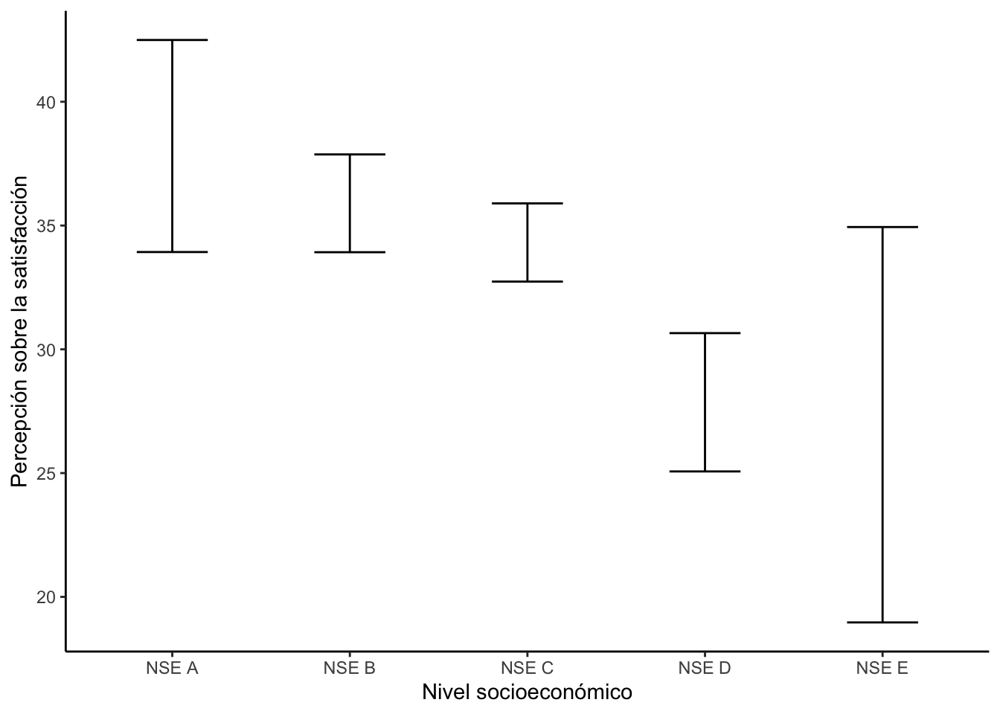
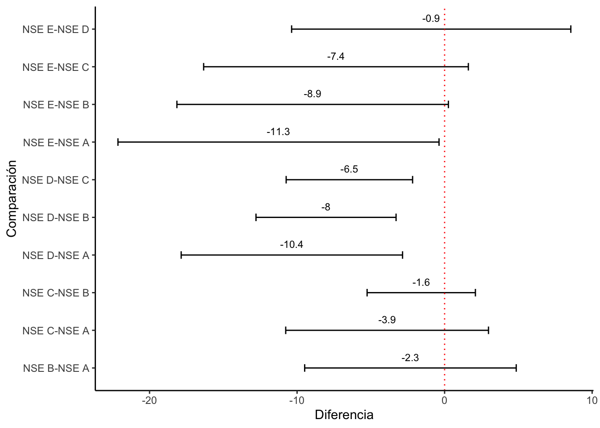
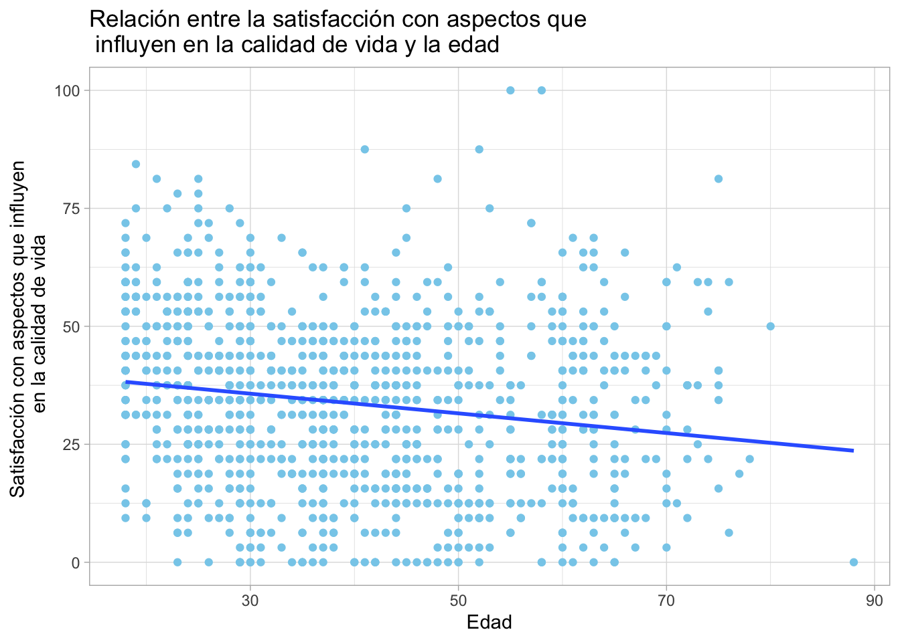
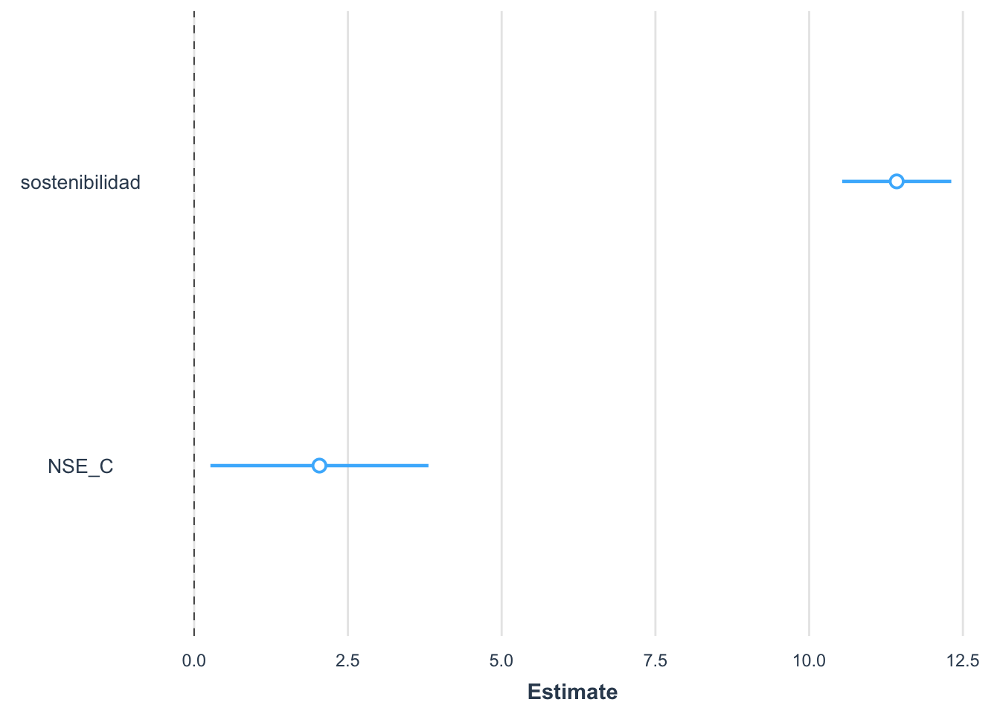

Práctica dirigida 11

library(rio)
library(haven)
library(tidyverse)
library(scales)
library(ggplot2)
library(fastDummies)
library(jtools)
library(lsr)Repaso
Para la sesión de hoy haremos un repaso de todos los temas que hemos visto luego del parcial, siendo estos:
- Anova
- Correlación
- Regresión simple
- Regresión múltiple
En esta oportunidad usaremos la información proveniente de la encuesta realizada por Lima Cómo Vamos, de la cual podemos obtener evidencia sobre la calidad de vida en Lima y Callao.
Aplicación práctica
data = import("BD_LimaComoVamos2021.sav")Anova
¿Existe diferencia entre los promedios de la satisfacción con aspectos que influyen en la calidad de vida en la ciudad (indicador creado con las variables de la P3_1 a la P3_8) según el nivel socioeconómico de una persona (NSE)?
Para responder a la pregunta, primero se deben identificar las variables: variable 1: inclusión (indicador -> numérica) variable 2: nivel socioeconómico (categórica politómica)
Prueba a realizar: Anova
- Preparar las variables (creación del indicador / configuración de las etiquetas)
- Creación del indicador
str(data$P3_1)## num [1:1117] 1 1 2 1 1 1 2 3 1 2 ...
## - attr(*, "label")= chr "P3_1. (MOSTRAR TARJETA) En una escala del 1 al 5, donde 1 significa nada satisfecho y 5 muy satisfecho ¿c"| __truncated__
## - attr(*, "format.spss")= chr "F8.0"table(data$P3_1)##
## 1 2 3 4 5
## 643 229 191 30 22str(data$P3_2)## num [1:1117] 1 1 4 1 2 3 4 1 1 3 ...
## - attr(*, "label")= chr "P3_1. (MOSTRAR TARJETA) En una escala del 1 al 5, donde 1 significa nada satisfecho y 5 muy satisfecho ¿c"| __truncated__
## - attr(*, "format.spss")= chr "F8.0"table(data$P3_2)##
## 1 2 3 4 5
## 397 302 303 76 31str(data$P3_3)## num [1:1117] 1 1 3 1 4 3 5 2 3 4 ...
## - attr(*, "label")= chr "P3_1. (MOSTRAR TARJETA) En una escala del 1 al 5, donde 1 significa nada satisfecho y 5 muy satisfecho ¿c"| __truncated__
## - attr(*, "format.spss")= chr "F8.0"table(data$P3_3)##
## 1 2 3 4 5
## 288 239 336 175 78str(data$P3_4)## num [1:1117] 1 1 5 1 1 2 5 2 1 4 ...
## - attr(*, "label")= chr "P3_1. (MOSTRAR TARJETA) En una escala del 1 al 5, donde 1 significa nada satisfecho y 5 muy satisfecho ¿c"| __truncated__
## - attr(*, "format.spss")= chr "F8.0"table(data$P3_4)##
## 1 2 3 4 5
## 386 309 264 118 40str(data$P3_5)## num [1:1117] 2 1 5 1 1 3 3 3 2 3 ...
## - attr(*, "label")= chr "P3_1. (MOSTRAR TARJETA) En una escala del 1 al 5, donde 1 significa nada satisfecho y 5 muy satisfecho ¿c"| __truncated__
## - attr(*, "format.spss")= chr "F8.0"table(data$P3_5)##
## 1 2 3 4 5
## 293 286 337 119 43str(data$P3_6)## num [1:1117] 3 1 4 1 1 2 4 3 2 3 ...
## - attr(*, "label")= chr "P3_1. (MOSTRAR TARJETA) En una escala del 1 al 5, donde 1 significa nada satisfecho y 5 muy satisfecho ¿c"| __truncated__
## - attr(*, "format.spss")= chr "F8.0"table(data$P3_6)##
## 1 2 3 4 5
## 405 297 293 80 37str(data$P3_7)## num [1:1117] 3 1 3 2 4 4 5 3 3 4 ...
## - attr(*, "label")= chr "P3_1. (MOSTRAR TARJETA) En una escala del 1 al 5, donde 1 significa nada satisfecho y 5 muy satisfecho ¿c"| __truncated__
## - attr(*, "format.spss")= chr "F8.0"table(data$P3_7)##
## 1 2 3 4 5
## 130 175 341 334 134str(data$P3_8)## num [1:1117] 1 1 3 1 4 3 1 2 2 3 ...
## - attr(*, "label")= chr "P3_1. (MOSTRAR TARJETA) En una escala del 1 al 5, donde 1 significa nada satisfecho y 5 muy satisfecho ¿c"| __truncated__
## - attr(*, "format.spss")= chr "F8.0"table(data$P3_8)##
## 1 2 3 4 5
## 302 279 345 136 52data = data %>%
mutate(
suma = P3_1 + P3_2 + P3_3 + P3_4 + P3_5 + P3_6 + P3_7 + P3_8,
satisfaccion = rescale(suma, to = c(0,100))
)- Etiquetas para el nivel socioeconómico
data = data %>%
mutate(
NSE = factor(NSE, labels=c("NSE A", "NSE B", "NSE C", "NSE D", "NSE E"))
)- Análisis descriptivo
tabla1 = data %>%
group_by(NSE) %>%
summarise(Media = mean(satisfaccion, na.rm = T),
Mediana = median(satisfaccion, na.rm = T),
Desviacion = sd(satisfaccion, na.rm = T),
Inferior = ciMean(satisfaccion, na.rm = T)[1],
Superior = ciMean(satisfaccion, na.rm = T)[2])
tabla1## # A tibble: 5 × 6
## NSE Media Mediana Desviacion Inferior Superior
## <fct> <dbl> <dbl> <dbl> <dbl> <dbl>
## 1 NSE A 38.2 37.5 16.1 33.9 42.5
## 2 NSE B 35.9 37.5 16.6 33.9 37.9
## 3 NSE C 34.3 34.4 18.4 32.7 35.9
## 4 NSE D 27.9 25 18.8 25.1 30.7
## 5 NSE E 27.0 18.8 22.2 19.0 34.9- Realización de la prueba
*Recuerda redactar tus hipótesis
H0: No existe diferencia en el promedio de satisfacción con aspectos que influyen en la calidad de vida de ningún nivel socioeconómico
H1: Al menos un nivel socioeconómico tiene un promedio de satisfacción con aspectos que influyen en la calidad de vida diferente al resto
anova = aov(data$satisfaccion ~ data$NSE)
summary(anova)## Df Sum Sq Mean Sq F value Pr(>F)
## data$NSE 4 10175 2543.8 7.826 3.24e-06 ***
## Residuals 1058 343904 325.1
## ---
## Signif. codes: 0 '***' 0.001 '**' 0.01 '*' 0.05 '.' 0.1 ' ' 1
## 54 observations deleted due to missingnessSiendo el p-valor menor a 0.05, es posible afirmar que al menos un grupo tiene un promedio de satisfacción con aspectos que influyen en la calidad de vida diferente al resto, pero todavía no podemos saber cuál. Para averiguar esto último debemos realizar la prueba Tukey, pero antes observaremos un poco los resultados obtenidos hasta el momento.
ggplot(tabla1,aes(x=NSE,y=Media))+
geom_errorbar(aes(ymin=Inferior,ymax=Superior),width=0.4)+
xlab("Nivel socioeconómico")+
ylab("Percepción sobre la satisfacción")+theme_classic()
El gráfico anterior permite observar que, por lo general, los niveles soecioeconómicos más bajos tienen menor satisfacción con aspectos que influyen en la calidad de vida de la ciudad.
- Prueba post-hoc
comparacion = TukeyHSD(anova)
comparacion## Tukey multiple comparisons of means
## 95% family-wise confidence level
##
## Fit: aov(formula = data$satisfaccion ~ data$NSE)
##
## $`data$NSE`
## diff lwr upr p adj
## NSE B-NSE A -2.3149920 -9.484662 4.8546781 0.9034677
## NSE C-NSE A -3.8975852 -10.769860 2.9746895 0.5302456
## NSE D-NSE A -10.3525498 -17.855253 -2.8498464 0.0016112
## NSE E-NSE A -11.2595943 -22.141789 -0.3773995 0.0383985
## NSE C-NSE B -1.5825932 -5.253399 2.0882132 0.7640005
## NSE D-NSE B -8.0375578 -12.784896 -3.2902199 0.0000411
## NSE E-NSE B -8.9446023 -18.146169 0.2569640 0.0613728
## NSE D-NSE C -6.4549646 -10.739962 -2.1699667 0.0003989
## NSE E-NSE C -7.3620091 -16.333788 1.6097696 0.1650693
## NSE E-NSE D -0.9070445 -10.370406 8.5563170 0.9989657Luego de realizar la prueba Tukey, es posible observar que existen diferencias significativas en el promedio de satisfacción con aspectos que influyen en la calidad de vida de distintos grupos, siendo estos:
- NSE D y NSE A
- NSE E y NSE A
- NSE D y NSE B
- NSE D y NSE C
*Recuerda que para graficar los resultados de la prueba Tukey debes seguir estos pasos:
- Creación de la tabla
comparacion.df = as.data.frame(comparacion[1])
comparacion.df$comparacion = rownames(comparacion.df)- Graficar
ggplot(comparacion.df, aes(x=comparacion, y=data.NSE.diff))+
geom_errorbar(aes(ymin=data.NSE.lwr, ymax=data.NSE.upr), width=0.2)+
geom_text(aes(label=paste(round(data.NSE.diff, 1))), vjust=-1, size=3)+
xlab("Comparación") + ylab("Diferencia")+
coord_flip() +
geom_hline(yintercept = 0, color = "red", linetype="dotted") +
theme_classic()
*Ten presente que para interpretar el gráfico debemos obsevar las agrupaciones que no traslapen al interpceto 0.
Correlación
¿Existe relación entre la satisfacción con aspectos que influyen en la calidad de vida y la edad (DC2)?
Para responder a la pregunta, primero se deben identificar las variables: variable 1: satisfacción (indicador -> numérica) variable 2: edad (numérica)
Prueba a realizar: Correlación
- Exploración de variables
data %>%
summarize(Min = min(satisfaccion, na.rm = TRUE),
Media = mean(satisfaccion, na.rm = TRUE),
Mediana = median(satisfaccion, na.rm = TRUE),
Max = max(satisfaccion, na.rm = TRUE))## Min Media Mediana Max
## 1 0 33.63711 34.375 100data %>%
summarize(Min = min(DC2, na.rm = TRUE),
Media = mean(DC2, na.rm = TRUE),
Mediana = median(DC2, na.rm = TRUE),
Max = max(DC2, na.rm = TRUE))## Min Media Mediana Max
## 1 18 40.27126 38 88- Prueba de correlación
H0: No existe relación entre la satisfacción con aspectos que influyen en la calidad de vida en la ciudad y la edad
H1: Sí existe relación entre la satisfacción con aspectos que influyen en la calidad de vida en la ciudad y la edad
cor.test(x=data$satisfaccion, y=data$DC2, method="pearson")##
## Pearson's product-moment correlation
##
## data: data$satisfaccion and data$DC2
## t = -5.6856, df = 1061, p-value = 1.684e-08
## alternative hypothesis: true correlation is not equal to 0
## 95 percent confidence interval:
## -0.2297032 -0.1129919
## sample estimates:
## cor
## -0.1719508Siendo el p-valor menor a 0.05 se rechaza la H0, por tanto, es posible afirmar que la satisfacción con aspectos que influyen en la vida de la ciudad y la edad de una persona están relacionadas. Adicionalmente, debe mencionarse que esta relación es negativa y pequeña. Lo anterior se refiere a que a medida que una persona tiene más edad, puede también sentir una menor satisfacción con aspectos que influyen en la calidad de vida en la ciudad. Sin embargo, la debilidad de esta correlación indica que la edad no es el único factor determinante y que cambios en la edad no necesariamente llevan a cambios significativos en la satisfacción con los aspectos considerados.
*¿Qué pasa si sale mayor a 0.05? En este escenario no se rechaza la hipótesis nula y por tanto, no se puede afirmar que exista relación entre las variables ni tampoco lo contrario. Por tanto, no debe interpretarse ni la fuerza ni el sentido (no sabemos si esa relación existe).
**Interpretación del cor Con el signo se ve el sentido de la relación. Es decir, si es directa o inversa (si el signo es positivo o negativo). Con el valor se ve la fuerza de la relación. Es decir, si es no relevante (0.0 a menos de 0.1), pequeña (de 0.1 a menos de 0.3), mediana (de 0.3 a menos de 0.5) o grande (de 0.5 a 1)
- Gráfico de dispersión
ggplot(data, aes(x=DC2, y=satisfaccion))+
geom_point(colour="skyblue")+
labs(x="Edad",
y="Satisfacción con aspectos que influyen \n en la calidad de vida") +
ggtitle("Relación entre la satisfacción con aspectos que \n influyen en la calidad de vida y la edad") +
theme_light()+ geom_smooth(method=lm,se=F)
theme_light()## List of 97
## $ line :List of 6
## ..$ colour : chr "black"
## ..$ linewidth : num 0.5
## ..$ linetype : num 1
## ..$ lineend : chr "butt"
## ..$ arrow : logi FALSE
## ..$ inherit.blank: logi TRUE
## ..- attr(*, "class")= chr [1:2] "element_line" "element"
## $ rect :List of 5
## ..$ fill : chr "white"
## ..$ colour : chr "black"
## ..$ linewidth : num 0.5
## ..$ linetype : num 1
## ..$ inherit.blank: logi TRUE
## ..- attr(*, "class")= chr [1:2] "element_rect" "element"
## $ text :List of 11
## ..$ family : chr ""
## ..$ face : chr "plain"
## ..$ colour : chr "black"
## ..$ size : num 11
## ..$ hjust : num 0.5
## ..$ vjust : num 0.5
## ..$ angle : num 0
## ..$ lineheight : num 0.9
## ..$ margin : 'margin' num [1:4] 0points 0points 0points 0points
## .. ..- attr(*, "unit")= int 8
## ..$ debug : logi FALSE
## ..$ inherit.blank: logi TRUE
## ..- attr(*, "class")= chr [1:2] "element_text" "element"
## $ title : NULL
## $ aspect.ratio : NULL
## $ axis.title : NULL
## $ axis.title.x :List of 11
## ..$ family : NULL
## ..$ face : NULL
## ..$ colour : NULL
## ..$ size : NULL
## ..$ hjust : NULL
## ..$ vjust : num 1
## ..$ angle : NULL
## ..$ lineheight : NULL
## ..$ margin : 'margin' num [1:4] 2.75points 0points 0points 0points
## .. ..- attr(*, "unit")= int 8
## ..$ debug : NULL
## ..$ inherit.blank: logi TRUE
## ..- attr(*, "class")= chr [1:2] "element_text" "element"
## $ axis.title.x.top :List of 11
## ..$ family : NULL
## ..$ face : NULL
## ..$ colour : NULL
## ..$ size : NULL
## ..$ hjust : NULL
## ..$ vjust : num 0
## ..$ angle : NULL
## ..$ lineheight : NULL
## ..$ margin : 'margin' num [1:4] 0points 0points 2.75points 0points
## .. ..- attr(*, "unit")= int 8
## ..$ debug : NULL
## ..$ inherit.blank: logi TRUE
## ..- attr(*, "class")= chr [1:2] "element_text" "element"
## $ axis.title.x.bottom : NULL
## $ axis.title.y :List of 11
## ..$ family : NULL
## ..$ face : NULL
## ..$ colour : NULL
## ..$ size : NULL
## ..$ hjust : NULL
## ..$ vjust : num 1
## ..$ angle : num 90
## ..$ lineheight : NULL
## ..$ margin : 'margin' num [1:4] 0points 2.75points 0points 0points
## .. ..- attr(*, "unit")= int 8
## ..$ debug : NULL
## ..$ inherit.blank: logi TRUE
## ..- attr(*, "class")= chr [1:2] "element_text" "element"
## $ axis.title.y.left : NULL
## $ axis.title.y.right :List of 11
## ..$ family : NULL
## ..$ face : NULL
## ..$ colour : NULL
## ..$ size : NULL
## ..$ hjust : NULL
## ..$ vjust : num 0
## ..$ angle : num -90
## ..$ lineheight : NULL
## ..$ margin : 'margin' num [1:4] 0points 0points 0points 2.75points
## .. ..- attr(*, "unit")= int 8
## ..$ debug : NULL
## ..$ inherit.blank: logi TRUE
## ..- attr(*, "class")= chr [1:2] "element_text" "element"
## $ axis.text :List of 11
## ..$ family : NULL
## ..$ face : NULL
## ..$ colour : chr "grey30"
## ..$ size : 'rel' num 0.8
## ..$ hjust : NULL
## ..$ vjust : NULL
## ..$ angle : NULL
## ..$ lineheight : NULL
## ..$ margin : NULL
## ..$ debug : NULL
## ..$ inherit.blank: logi TRUE
## ..- attr(*, "class")= chr [1:2] "element_text" "element"
## $ axis.text.x :List of 11
## ..$ family : NULL
## ..$ face : NULL
## ..$ colour : NULL
## ..$ size : NULL
## ..$ hjust : NULL
## ..$ vjust : num 1
## ..$ angle : NULL
## ..$ lineheight : NULL
## ..$ margin : 'margin' num [1:4] 2.2points 0points 0points 0points
## .. ..- attr(*, "unit")= int 8
## ..$ debug : NULL
## ..$ inherit.blank: logi TRUE
## ..- attr(*, "class")= chr [1:2] "element_text" "element"
## $ axis.text.x.top :List of 11
## ..$ family : NULL
## ..$ face : NULL
## ..$ colour : NULL
## ..$ size : NULL
## ..$ hjust : NULL
## ..$ vjust : num 0
## ..$ angle : NULL
## ..$ lineheight : NULL
## ..$ margin : 'margin' num [1:4] 0points 0points 2.2points 0points
## .. ..- attr(*, "unit")= int 8
## ..$ debug : NULL
## ..$ inherit.blank: logi TRUE
## ..- attr(*, "class")= chr [1:2] "element_text" "element"
## $ axis.text.x.bottom : NULL
## $ axis.text.y :List of 11
## ..$ family : NULL
## ..$ face : NULL
## ..$ colour : NULL
## ..$ size : NULL
## ..$ hjust : num 1
## ..$ vjust : NULL
## ..$ angle : NULL
## ..$ lineheight : NULL
## ..$ margin : 'margin' num [1:4] 0points 2.2points 0points 0points
## .. ..- attr(*, "unit")= int 8
## ..$ debug : NULL
## ..$ inherit.blank: logi TRUE
## ..- attr(*, "class")= chr [1:2] "element_text" "element"
## $ axis.text.y.left : NULL
## $ axis.text.y.right :List of 11
## ..$ family : NULL
## ..$ face : NULL
## ..$ colour : NULL
## ..$ size : NULL
## ..$ hjust : num 0
## ..$ vjust : NULL
## ..$ angle : NULL
## ..$ lineheight : NULL
## ..$ margin : 'margin' num [1:4] 0points 0points 0points 2.2points
## .. ..- attr(*, "unit")= int 8
## ..$ debug : NULL
## ..$ inherit.blank: logi TRUE
## ..- attr(*, "class")= chr [1:2] "element_text" "element"
## $ axis.ticks :List of 6
## ..$ colour : chr "grey70"
## ..$ linewidth : 'rel' num 0.5
## ..$ linetype : NULL
## ..$ lineend : NULL
## ..$ arrow : logi FALSE
## ..$ inherit.blank: logi TRUE
## ..- attr(*, "class")= chr [1:2] "element_line" "element"
## $ axis.ticks.x : NULL
## $ axis.ticks.x.top : NULL
## $ axis.ticks.x.bottom : NULL
## $ axis.ticks.y : NULL
## $ axis.ticks.y.left : NULL
## $ axis.ticks.y.right : NULL
## $ axis.ticks.length : 'simpleUnit' num 2.75points
## ..- attr(*, "unit")= int 8
## $ axis.ticks.length.x : NULL
## $ axis.ticks.length.x.top : NULL
## $ axis.ticks.length.x.bottom: NULL
## $ axis.ticks.length.y : NULL
## $ axis.ticks.length.y.left : NULL
## $ axis.ticks.length.y.right : NULL
## $ axis.line : list()
## ..- attr(*, "class")= chr [1:2] "element_blank" "element"
## $ axis.line.x : NULL
## $ axis.line.x.top : NULL
## $ axis.line.x.bottom : NULL
## $ axis.line.y : NULL
## $ axis.line.y.left : NULL
## $ axis.line.y.right : NULL
## $ legend.background :List of 5
## ..$ fill : NULL
## ..$ colour : logi NA
## ..$ linewidth : NULL
## ..$ linetype : NULL
## ..$ inherit.blank: logi TRUE
## ..- attr(*, "class")= chr [1:2] "element_rect" "element"
## $ legend.margin : 'margin' num [1:4] 5.5points 5.5points 5.5points 5.5points
## ..- attr(*, "unit")= int 8
## $ legend.spacing : 'simpleUnit' num 11points
## ..- attr(*, "unit")= int 8
## $ legend.spacing.x : NULL
## $ legend.spacing.y : NULL
## $ legend.key :List of 5
## ..$ fill : chr "white"
## ..$ colour : logi NA
## ..$ linewidth : NULL
## ..$ linetype : NULL
## ..$ inherit.blank: logi TRUE
## ..- attr(*, "class")= chr [1:2] "element_rect" "element"
## $ legend.key.size : 'simpleUnit' num 1.2lines
## ..- attr(*, "unit")= int 3
## $ legend.key.height : NULL
## $ legend.key.width : NULL
## $ legend.text :List of 11
## ..$ family : NULL
## ..$ face : NULL
## ..$ colour : NULL
## ..$ size : 'rel' num 0.8
## ..$ hjust : NULL
## ..$ vjust : NULL
## ..$ angle : NULL
## ..$ lineheight : NULL
## ..$ margin : NULL
## ..$ debug : NULL
## ..$ inherit.blank: logi TRUE
## ..- attr(*, "class")= chr [1:2] "element_text" "element"
## $ legend.text.align : NULL
## $ legend.title :List of 11
## ..$ family : NULL
## ..$ face : NULL
## ..$ colour : NULL
## ..$ size : NULL
## ..$ hjust : num 0
## ..$ vjust : NULL
## ..$ angle : NULL
## ..$ lineheight : NULL
## ..$ margin : NULL
## ..$ debug : NULL
## ..$ inherit.blank: logi TRUE
## ..- attr(*, "class")= chr [1:2] "element_text" "element"
## $ legend.title.align : NULL
## $ legend.position : chr "right"
## $ legend.direction : NULL
## $ legend.justification : chr "center"
## $ legend.box : NULL
## $ legend.box.just : NULL
## $ legend.box.margin : 'margin' num [1:4] 0cm 0cm 0cm 0cm
## ..- attr(*, "unit")= int 1
## $ legend.box.background : list()
## ..- attr(*, "class")= chr [1:2] "element_blank" "element"
## $ legend.box.spacing : 'simpleUnit' num 11points
## ..- attr(*, "unit")= int 8
## $ panel.background :List of 5
## ..$ fill : chr "white"
## ..$ colour : logi NA
## ..$ linewidth : NULL
## ..$ linetype : NULL
## ..$ inherit.blank: logi TRUE
## ..- attr(*, "class")= chr [1:2] "element_rect" "element"
## $ panel.border :List of 5
## ..$ fill : logi NA
## ..$ colour : chr "grey70"
## ..$ linewidth : 'rel' num 1
## ..$ linetype : NULL
## ..$ inherit.blank: logi TRUE
## ..- attr(*, "class")= chr [1:2] "element_rect" "element"
## $ panel.spacing : 'simpleUnit' num 5.5points
## ..- attr(*, "unit")= int 8
## $ panel.spacing.x : NULL
## $ panel.spacing.y : NULL
## $ panel.grid :List of 6
## ..$ colour : chr "grey87"
## ..$ linewidth : NULL
## ..$ linetype : NULL
## ..$ lineend : NULL
## ..$ arrow : logi FALSE
## ..$ inherit.blank: logi TRUE
## ..- attr(*, "class")= chr [1:2] "element_line" "element"
## $ panel.grid.major :List of 6
## ..$ colour : NULL
## ..$ linewidth : 'rel' num 0.5
## ..$ linetype : NULL
## ..$ lineend : NULL
## ..$ arrow : logi FALSE
## ..$ inherit.blank: logi TRUE
## ..- attr(*, "class")= chr [1:2] "element_line" "element"
## $ panel.grid.minor :List of 6
## ..$ colour : NULL
## ..$ linewidth : 'rel' num 0.25
## ..$ linetype : NULL
## ..$ lineend : NULL
## ..$ arrow : logi FALSE
## ..$ inherit.blank: logi TRUE
## ..- attr(*, "class")= chr [1:2] "element_line" "element"
## $ panel.grid.major.x : NULL
## $ panel.grid.major.y : NULL
## $ panel.grid.minor.x : NULL
## $ panel.grid.minor.y : NULL
## $ panel.ontop : logi FALSE
## $ plot.background :List of 5
## ..$ fill : NULL
## ..$ colour : chr "white"
## ..$ linewidth : NULL
## ..$ linetype : NULL
## ..$ inherit.blank: logi TRUE
## ..- attr(*, "class")= chr [1:2] "element_rect" "element"
## $ plot.title :List of 11
## ..$ family : NULL
## ..$ face : NULL
## ..$ colour : NULL
## ..$ size : 'rel' num 1.2
## ..$ hjust : num 0
## ..$ vjust : num 1
## ..$ angle : NULL
## ..$ lineheight : NULL
## ..$ margin : 'margin' num [1:4] 0points 0points 5.5points 0points
## .. ..- attr(*, "unit")= int 8
## ..$ debug : NULL
## ..$ inherit.blank: logi TRUE
## ..- attr(*, "class")= chr [1:2] "element_text" "element"
## $ plot.title.position : chr "panel"
## $ plot.subtitle :List of 11
## ..$ family : NULL
## ..$ face : NULL
## ..$ colour : NULL
## ..$ size : NULL
## ..$ hjust : num 0
## ..$ vjust : num 1
## ..$ angle : NULL
## ..$ lineheight : NULL
## ..$ margin : 'margin' num [1:4] 0points 0points 5.5points 0points
## .. ..- attr(*, "unit")= int 8
## ..$ debug : NULL
## ..$ inherit.blank: logi TRUE
## ..- attr(*, "class")= chr [1:2] "element_text" "element"
## $ plot.caption :List of 11
## ..$ family : NULL
## ..$ face : NULL
## ..$ colour : NULL
## ..$ size : 'rel' num 0.8
## ..$ hjust : num 1
## ..$ vjust : num 1
## ..$ angle : NULL
## ..$ lineheight : NULL
## ..$ margin : 'margin' num [1:4] 5.5points 0points 0points 0points
## .. ..- attr(*, "unit")= int 8
## ..$ debug : NULL
## ..$ inherit.blank: logi TRUE
## ..- attr(*, "class")= chr [1:2] "element_text" "element"
## $ plot.caption.position : chr "panel"
## $ plot.tag :List of 11
## ..$ family : NULL
## ..$ face : NULL
## ..$ colour : NULL
## ..$ size : 'rel' num 1.2
## ..$ hjust : num 0.5
## ..$ vjust : num 0.5
## ..$ angle : NULL
## ..$ lineheight : NULL
## ..$ margin : NULL
## ..$ debug : NULL
## ..$ inherit.blank: logi TRUE
## ..- attr(*, "class")= chr [1:2] "element_text" "element"
## $ plot.tag.position : chr "topleft"
## $ plot.margin : 'margin' num [1:4] 5.5points 5.5points 5.5points 5.5points
## ..- attr(*, "unit")= int 8
## $ strip.background :List of 5
## ..$ fill : chr "grey70"
## ..$ colour : logi NA
## ..$ linewidth : NULL
## ..$ linetype : NULL
## ..$ inherit.blank: logi TRUE
## ..- attr(*, "class")= chr [1:2] "element_rect" "element"
## $ strip.background.x : NULL
## $ strip.background.y : NULL
## $ strip.clip : chr "inherit"
## $ strip.placement : chr "inside"
## $ strip.text :List of 11
## ..$ family : NULL
## ..$ face : NULL
## ..$ colour : chr "white"
## ..$ size : 'rel' num 0.8
## ..$ hjust : NULL
## ..$ vjust : NULL
## ..$ angle : NULL
## ..$ lineheight : NULL
## ..$ margin : 'margin' num [1:4] 4.4points 4.4points 4.4points 4.4points
## .. ..- attr(*, "unit")= int 8
## ..$ debug : NULL
## ..$ inherit.blank: logi TRUE
## ..- attr(*, "class")= chr [1:2] "element_text" "element"
## $ strip.text.x : NULL
## $ strip.text.x.bottom : NULL
## $ strip.text.x.top : NULL
## $ strip.text.y :List of 11
## ..$ family : NULL
## ..$ face : NULL
## ..$ colour : NULL
## ..$ size : NULL
## ..$ hjust : NULL
## ..$ vjust : NULL
## ..$ angle : num -90
## ..$ lineheight : NULL
## ..$ margin : NULL
## ..$ debug : NULL
## ..$ inherit.blank: logi TRUE
## ..- attr(*, "class")= chr [1:2] "element_text" "element"
## $ strip.text.y.left :List of 11
## ..$ family : NULL
## ..$ face : NULL
## ..$ colour : NULL
## ..$ size : NULL
## ..$ hjust : NULL
## ..$ vjust : NULL
## ..$ angle : num 90
## ..$ lineheight : NULL
## ..$ margin : NULL
## ..$ debug : NULL
## ..$ inherit.blank: logi TRUE
## ..- attr(*, "class")= chr [1:2] "element_text" "element"
## $ strip.text.y.right : NULL
## $ strip.switch.pad.grid : 'simpleUnit' num 2.75points
## ..- attr(*, "unit")= int 8
## $ strip.switch.pad.wrap : 'simpleUnit' num 2.75points
## ..- attr(*, "unit")= int 8
## - attr(*, "class")= chr [1:2] "theme" "gg"
## - attr(*, "complete")= logi TRUE
## - attr(*, "validate")= logi TRUEEs posible observar que la relación entre ambas variables es negativa y pequeña. Esto debido a que la recta se posiciona de manera descendente y por la gran dispersión de los puntos.
Regresión simple
Crea un modelo para predecir los valores de la satisfacción con aspectos que influyen en la calidad de vida en la ciudad según la satisfacción que se tiene conaspectos relacionados al cuidado del medio ambiente
Para lo anterior, primero tendremos que crear otro indicador, siendo este:
data = data %>%
mutate(
suma2 = I_1_P13 + I_2_P13 + I_3_P13 + I_4_P13 + I_5_P13 + I_6_P13 + I_7_P13 + I_8_P13,
sostenibilidad = rescale(suma2, to = c(0,100))
)- Crear el modelo
modelo1 = lm(satisfaccion ~ sostenibilidad, data = data)
summary(modelo1)##
## Call:
## lm(formula = satisfaccion ~ sostenibilidad, data = data)
##
## Residuals:
## Min 1Q Median 3Q Max
## -38.809 -9.783 0.140 9.829 48.658
##
## Coefficients:
## Estimate Std. Error t value Pr(>|t|)
## (Intercept) 12.74739 0.95367 13.37 <2e-16 ***
## sostenibilidad 0.58760 0.02334 25.18 <2e-16 ***
## ---
## Signif. codes: 0 '***' 0.001 '**' 0.01 '*' 0.05 '.' 0.1 ' ' 1
##
## Residual standard error: 13.98 on 952 degrees of freedom
## (163 observations deleted due to missingness)
## Multiple R-squared: 0.3997, Adjusted R-squared: 0.3991
## F-statistic: 633.9 on 1 and 952 DF, p-value: < 2.2e-16- Interpretamos
A. Validez del modelo: debido a que el p-valor es menor a 0.05, se puede afirmar que el modelo tiene validez.
*Al ser esta una regresión simple. Se puede afirmar que la variable X (indicador de satisfacción con aspectos relacionados al medio ambiente) usada para predecir la variable Y (indicador de satisfacción con aspectos que influyen en la calidad de vida en la ciudad) están relacionadas.
B. Explicación del modelo: el modelo indica que aproximadamente el 39.97% (Multiple R-squared) de la variabilidad en la satisfacción con aspectos que influyen en la calidad de la ciudad puede ser explicada por la satisfacción con aspectos relacionados con el medio ambiente.
*Recuerda que lo anterior representa la cantidad de variabilidad en los valores de Y que es capturada por el modelo de regresión. En ese contexto, cuanto más cercano esté el valor a 1, mayor será la proporción de la variabilidad explicada por el modelo.
C. Identificación e interpretación de la constante/intersección y la pendiente/coeficiente: - Constante/ intersección: 12.74739 - Pendiente/ coeficiente: 0.58760
De ese modo, es posible afirmar que si la satisfacción con aspectos relacionados con el medio ambiente es 0, el valor de la satisfacción con aspectos que influyen en la calidad de vida es 12.74739, mientras que por cada punto adicional en el indicador de sostenibilidad, el valor del indicador de satisfacción con aspectos que influyen en la calidad de vida en la ciudad aumenta en 0.58760.
D. Ecuación de la recta:
Y = 12.74739 + 0.58760 (X)
E. Predecir ¿Cuál será la satisfacción con aspectos que influyen en la calidad de vida de la ciudad si se consideran estadísticos significativos?
data %>%
summarise(mean(sostenibilidad, na.rm=T))## mean(sostenibilidad, na.rm = T)
## 1 35.97215predict(modelo1,data.frame(sostenibilidad=35.97215))## 1
## 33.88476Regresión múltiple
Crea un modelo para predecir la satisfacción con aspectos que influyen en la calidad de vida considerando la satisfacción con aspectos del medio ambiente y la pertenencia al NSE C (NSE)?
- Fastdummies
data = dummy_cols(data, select_columns = "NSE")
#Cambia el nombre de la columna de interés para mayor facilidad
data = rename(data,c("NSE_C"=`NSE_NSE C`)) - Realizar el modelo
modelo2 = lm(satisfaccion ~ sostenibilidad + NSE_C, data = data)
summary(modelo2)##
## Call:
## lm(formula = satisfaccion ~ sostenibilidad + NSE_C, data = data)
##
## Residuals:
## Min 1Q Median 3Q Max
## -39.318 -9.885 0.051 9.397 49.697
##
## Coefficients:
## Estimate Std. Error t value Pr(>|t|)
## (Intercept) 11.6918 1.0606 11.024 <2e-16 ***
## sostenibilidad 0.5889 0.0233 25.279 <2e-16 ***
## NSE_C 2.0370 0.9034 2.255 0.0244 *
## ---
## Signif. codes: 0 '***' 0.001 '**' 0.01 '*' 0.05 '.' 0.1 ' ' 1
##
## Residual standard error: 13.95 on 951 degrees of freedom
## (163 observations deleted due to missingness)
## Multiple R-squared: 0.4029, Adjusted R-squared: 0.4017
## F-statistic: 320.9 on 2 and 951 DF, p-value: < 2.2e-16- Interpretamos
A. Validez del modelo: siendo el p-valor menor a 0.05, es posible afirmar que el modelo es válido.
B. Aporte de las variables independientes al modelo: Puede observarse que tanto la satisfacción con aspectos relacionados al medio ambiente como la pertenencia al NSE C de una persona contribuyen a la explicación de la variabilidad con la satisfacción de los aspectos que influyen en la calidad de vida de la ciudad.
C. Explicación del modelo: el modelo indica que aproximadamente el 40.17% (Adjusted R-squared) de la variabilidad en la satisfacción con aspectos que influyen en la calidad de vida de la ciudad puede ser explicada por la satisfacción que tiene con aspectos relacionados al medio ambiente y la pertenecia al NSE C.
*Representa la cantidad de variabilidad en los valores de Y que es capturada por el modelo de regresión. Cuanto más cercano esté el valor a 1, mayor será la proporción de la variabilidad explicada por el modelo.
D. Identificación e interpretación de la constante/intersección y la pendiente/coeficiente: - Constante/ intersección: 11.6918 - Pendiente/ coeficiente de la variable sostenibilidad: 0.5889 - Pendiente/ coeficiente de NSE C: 2.0370
De ese modo, es posible afirmar que si la satisfación con aspectos del medio ambiente es 0 y el NSE no es C, el valor de la satisfación con aspectos que influyen en la calidad de vida es 11.6918, mientras que por cada punto adicional en el indicador de sostenibilidad, la satisfacción con aspectos que influyen en la calidad de vida aumenta en 0.5889.
Adicionalmente, el pertenecer al NSE C está asociado con un aumento en indicador de satisfacción con aspectos que influyen en la calidad de vida en 2.0370 a comparación con aquellos que no pertenezcan a este nivel socioeconómico.
E. Ecuación de la recta:
Y = 11.6918 + 0.5889(X1) + 2.0370(X2)
F. Predecir ¿Cuál será la satisfacción con aspectos que influyen en la calidad de vida de la ciudad si se consideran estadísticos significativos y la no pertenencia al NSE C?
data %>%
summarise(mean(sostenibilidad, na.rm=T))## mean(sostenibilidad, na.rm = T)
## 1 35.97215predict(modelo2, data.frame(sostenibilidad = 35.97215, NSE_C = 0))## 1
## 32.87482G. ¿Qué variable aporta más?
summ(modelo2, scale=T)| Observations | 954 (163 missing obs. deleted) |
| Dependent variable | satisfaccion |
| Type | OLS linear regression |
| F(2,951) | 320.86 |
| R² | 0.40 |
| Adj. R² | 0.40 |
| Est. | S.E. | t val. | p | |
|---|---|---|---|---|
| (Intercept) | 32.87 | 0.64 | 51.69 | 0.00 |
| sostenibilidad | 11.42 | 0.45 | 25.28 | 0.00 |
| NSE_C | 2.04 | 0.90 | 2.25 | 0.02 |
| Standard errors: OLS; Continuous predictors are mean-centered and scaled by 1 s.d. |
Se puede observar que el indicador de satisfacción con aspectos relacionados con el medio ambiente tiene un mayor impacto que la pertenecia al nivel socioeconómico C
plot_summs(modelo2, scale = T)